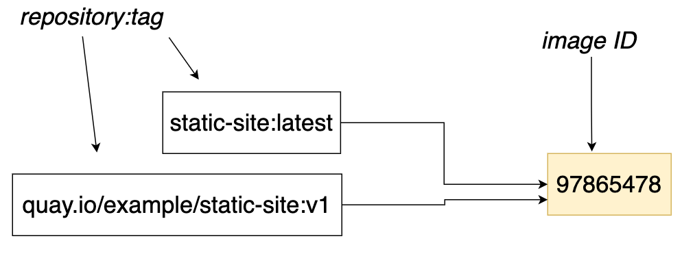

Docker
Objectives
By the end of this lesson you should be able to:
- build a docker image from a Dockerfile
- run an image with
Docker Concepts
Image
Container
Image Registry/Image Repository
Quay.io
Create Your Account
You can sign up/sign in with Github or Redhat, or create your account:
- Visit https://quay.io/signin/
- Click "Create Account"
Login From Your Machine
Go to your account settings:

Click "Create Encrypted Password":

Copy the docker login command:
Run that command from your Terminal.
NOTE: Windows users, do this from the Ubuntu Terminal
Create a Repository
From the Quay.io dashboard, click "Create New Repository"
Name it static-site and make it public:

Create a local project
cd ~
mkdir static-site
cd static-site
code .
Add a file named index.html with the following contents:
<html>
<head>
<title>Static Site</title>
</head>
<body>
<h1>My Static Site</h1>
</body>
</html>
Add a file named Dockerfile and add the following contents:
FROM quay.io/upslopeio/nginx-unprivileged
COPY index.html /usr/share/nginx/html/index.html
Build the image
docker build -t static-site .
You can see that image now exists on your machine with the following command:
docker image ls
You have one image on your machine, and one repository:tag combination pointing to it:
Run the image
docker run -p 8085:8080 -it static-site
Then open the site locally:
From a different Terminal window you can see that the process is running with the following command:
docker ps
Use CTRL+C to quit the process.
Push the image to quay.io
First, add a tag to the image (replace USERNAME with your quay.io username):
docker tag static-site quay.io/USERNAME/static-site:v1
You can see that image now has two tags on your machine:
docker image ls
Both repository:tags point to the same image ID:

Then push the image to quay.io (replace USERNAME with your quay.io username):
docker push quay.io/USERNAME/static-site:v1
Update the image
- Make a change to
index.html - Rebuild the image
- Rerun the image to make sure it's working correctly
- Tag the new image with
v2 - Push the
v2image to quay.io